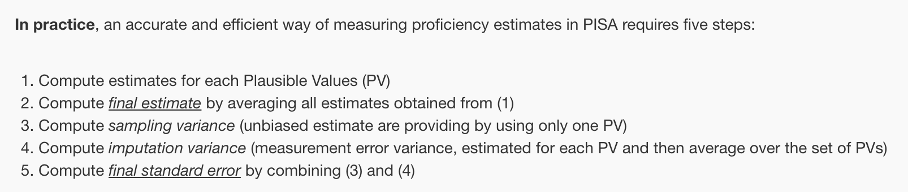

pacman::p_load(ggrepel, patchwork,
ggthemes, hrbrthemes,
ggdist, ggridges,
colorspace,ggstatsplot,
tidyverse) Take-home Exercise 1
version updated: 22 Jan 3PM, fixed the error of EDA4 Description was not pushed to Git properly.
version updated: 22 Jan 7PM, included EDA5 and Appendix.
Project Brief
This exercises aims to use data analysis methods to explore public perceptions of educational disparities in Singapore. Focus on student performance in mathematics, reading, and science, and examine how these outcomes correlate with factors like school type, gender, and socioeconomic status.
The complete project brief could be found here.
Data
The 2022 Programme for International Student Assessment (PISA) data, released on December 5, 2022, assesses global education systems by testing 15-year-olds in mathematics, reading, and science. The PISA 2022 database includes responses from students, schools, and parents across five data files, primarily in SAS and SPSS formats. This assignment, will only focus on the Student Questionnaire Data File. Additional resources like codebooks, and the PISA 2022 Technical Report are also used as supplementary materials to understand the dataset.
Project Task
In this take-home exercise, 5 EDA visualisations will be used to understand:
the distribution of Singapore students’ performance in mathematics, reading, and science,
the relationship between these performances with schools, gender and socioeconomic status of the students.
Data Preparation
Loading R packages
Importing filtered PISA data for SG students
The code chunk below uses read_rds() to import PISA SG data into R environment.
stu_qqq_SG <- read_rds("data/stu_qqq_SG.rds")Summary Statistics of stu_qqq_SG
the code below use dim() to check the dataframe dimension
dim(stu_qqq_SG)[1] 6606 1279The PISA dataset comprises 6606 observations, with 1279 variables. Displaying a sample using standard functions like head() is not feasible due to the sheer number of columns. Similarly, including all columns in the analysis would be impractical.
A more effective approach involves a thorough understanding of the dataset’s fields, enabling the selection of relevant variables that are crucial to the analysis.
To understand the structure and content available of the columns in the stu_qqq_SG dataframe, the code below retrieve the attributes of the first three columns
lapply(stu_qqq_SG, attributes)[0:3]$CNT
$CNT$label
[1] "Country code 3-character"
$CNTRYID
$CNTRYID$label
[1] "Country Identifier"
$CNTSCHID
$CNTSCHID$label
[1] "Intl. School ID"The dataframe includes label which can be served as column descriptions, with this, making it easier to identify columns which are more relevant to the analysis.
the code below use anyDuplicated() to check if any duplicated entries in the dataset.
anyDuplicated(stu_qqq_SG)[1] 0the code use is.na() to check for total number of missing entries in the dataset.
sum(is.na(stu_qqq_SG))[1] 4168500All observations are unique. But a huge number of missing values are found in the given data frame. This suggests that another potential approach to handle this dataset is to eliminate columns with a high percentage of missing values.
Note
according to PISA, it was suggested that cases with fewer than three valid responses received score “99”, indicating a missing scale score due to insufficient responses. This value should be considered as missing values and filtered out if existed in the data set used later.
Understanding the Data
Given the challenge in understanding the labels under each column attributes, which act as column descriptors, and the cumbersome process of examining them one by one, creating a data schema table is a more efficient approach for facilitating in-depth analysis
The code chunk below uses tibble() to create a data frame. This data frame summarizes essential attributes of each column in the 'stu_qqq_SG', such as column descriptions, the number of missing values, and the count of unique values. The first five rows are displayed for a preliminary understanding of the data structure.
Show the code
data_schema <- tibble(
column_name = names(stu_qqq_SG),
description = sapply(stu_qqq_SG, function(col) {
lbl <- attr(col, "label")
if(is.null(lbl)) "" else lbl # If label is null, return an empty string
}),
data_type = sapply(stu_qqq_SG, class),
num_missing_values = sapply(stu_qqq_SG, function(col) {
sum(is.na(col)) # Calculates the number of NA values in the column
}),
num_unique_values = sapply(stu_qqq_SG, function(col) {
length(unique(col)) # Calculates the number of unique values in the column
})
)
head(data_schema, 5)# A tibble: 5 × 5
column_name description data_type num_missing_values num_unique_values
<chr> <chr> <chr> <int> <int>
1 CNT Country code 3-cha… character 0 1
2 CNTRYID Country Identifier numeric 0 1
3 CNTSCHID Intl. School ID numeric 0 164
4 CNTSTUID Intl. Student ID numeric 0 6606
5 CYC PISA Assessment Cy… character 0 1To delve into the data schema’s specifics, summary() is used to examine the overall distribution of unique and missing values across the dataset. This step is crucial for understanding the original data’s structure and determining the data’s health and integrity.
Show the code
summary(data_schema) column_name description data_type num_missing_values
Length:1279 Length:1279 Length:1279 Min. : 0.0
Class :character Class :character Class :character 1st Qu.: 69.5
Mode :character Mode :character Mode :character Median :3294.0
Mean :3259.2
3rd Qu.:6606.0
Max. :6606.0
num_unique_values
Min. : 1.0
1st Qu.: 1.0
Median : 5.0
Mean : 711.3
3rd Qu.: 7.0
Max. :6606.0 The summary indicates that over 25% of the columns are filled with missing values, and over 25% contain only one unique value. As previously noted, such columns with uniform data may not contribute meaningful insights and could be considered for exclusion to streamline the analysis process.
Column Description
A detailed examination of the column descriptions, along with the questionnaire details provided on the technical report reveals the data schema of the 'stu_qqq_SG' dataframe. The following diagram illustrates the data structure:
flowchart TD style A fill:#000000,color:#ffffff style B fill:#c73824,color:#ffffff style H fill:#c73824,color:#ffffff style I fill:#c73824,color:#ffffff A(stu_qqq_SG) --> B(STxxx) A --> C(ICxxx) A --> D(FLxxx) A --> E(WBxxx) A --> F(PAxxx) A --> G(Wxxx) A --> H(PVxxx) A --> I(Others)
The dataset provides the information of following:
ST: Student Questionnaire, including student demographics and Economic, Social, and Cultural Status (ESCS) information. Further details can be found in Annex 5.A of the technical report.
IC: Information Communication Technology Questionnaire (ICTQ).
FL: Financial Literacy Questionnaire (FLQ).
WB: Well-being Questionnaire (WBQ).
PA: Parent Questionnaire (PaQ).
W: Final trimmed nonresponse adjusted student weight.
PV: Plausible Values representing student performance.
Others: This includes basic student information and derived variables like the ESCS index. Details of all field could be found under the technical reports
For this exercise, which focuses on the performance distribution of Singapore students in mathematics, reading, and science, and their correlation with school type, gender, and socioeconomic status, the ST, PV, and Others categories are particularly pertinent. A deeper dive into these fields is available in the subsequent chapter.
Dive into Relevant Information
Performance in Mathematics, Reading, and Science
The dataset organizes Plausible Values (PVs) across subjects: Mathematics, Reading, and Science. Mathematics, for instance, is subdivided into specific topics representing various mathematical competencies.
flowchart LR style A fill:#000000,color:#ffffff style B fill:#c73824,color:#ffffff style C fill:#c73824,color:#ffffff style D fill:#c73824,color:#ffffff A(PV) --> B(Maths) A --> C(Reading) A --- D(Science) B --- E(Change and Relationships) B --- F(Quantity) B --- G(Space and Shape) B --- H(Uncertainty and Data) B --- I(Employing Mathematical Concepts, Facts, and Procedures) B --- J(Formulating Situations Mathematically) B--- K(Interpreting, Applying, and Evaluating Mathematical Outcomes) B --- L(Reasoning)
For a balanced analysis of student performance across subjects, it’s crucial to maintain a consistent level of detail. Each PV score comprises 10 distinct values, reflecting various potential levels of student performance. Therefore, determining the appropriate level of aggregation is essential for an unbiased and comprehensive analysis.
Selecting a single PV simplifies analysis but may underestimate standard errors and ignoring the variability. PISA analysts note that in large samples, the choice between one and multiple PVs may not significantly alter results.
Another approach is to calculate the average PV score for each student in a given subject to represent their overall performance. However, as noted in this literature, this method can severely underestimate standard errors, especially if only a single PV is used.
Show the code
# Selecting the relevant data
selected_data <- stu_qqq_SG %>%
select(CNTSTUID, PV1MATH, PV2MATH, PV3MATH, PV4MATH, PV5MATH, PV6MATH, PV7MATH, PV8MATH, PV9MATH, PV10MATH)
# Calculate the average PV score for each student
selected_data <- selected_data %>%
mutate(AVG_MATH = rowMeans(select(., starts_with("PV")), na.rm = TRUE))
# Reshape the data to long format including the average
math_PV <- selected_data %>%
pivot_longer(cols = -CNTSTUID, names_to = "PV_math", values_to = "score")
# Create a custom order for the plot
math_PV$PV_math <- factor(math_PV$PV_math, levels = c("PV1MATH", "PV2MATH", "PV3MATH", "PV4MATH", "PV5MATH",
"PV6MATH", "PV7MATH", "PV8MATH", "PV9MATH", "PV10MATH", "AVG_MATH"))
# Plot the boxplot with custom order and refined theme settings
ggplot(math_PV, aes(x = PV_math, y = score)) +
geom_boxplot() +
theme_minimal() +
labs(title = "Boxplot of Math Scores for Each Plausible Value and Average",
x = "Math Performance",
) +
scale_x_discrete(labels = c("PV1", "PV2", "PV3", "PV4", "PV5", "PV6", "PV7", "PV8", "PV9", "PV10", "Average")) +
theme(plot.title = element_text(face = "bold", hjust = 0.5),
axis.title.y = element_blank(),
axis.ticks.y = element_blank(),
panel.grid.minor = element_blank(),
axis.ticks.x = element_line(),
axis.line.x = element_line())
The boxplot demonstrates that students’ performances vary across the different Plausible Values (PVs) in mathematics, suggesting that a single PV may not fully capture an individual’s skillset. Averaging the scores provides a generalized view to identify broad patterns and trends. Additionally, calculating the variance of PVs for each student offers insights into their performance stability across different mathematical competencies.
alternatively, under How to prepare and analyse the PISA database, a step by step instruction is illustrated as below:

the code chunk below compare the difference of using PISA and aggregation method in a historgam to illustrate the distribution
Show the code
all_PVs <- pivot_longer(selected_data, cols = starts_with("PV"), names_to = "PV", values_to = "score")
ggplot() +
geom_density(data = all_PVs, aes(x = score, fill = "PISA Method"), color = "grey90", fill = "grey90") +
geom_density(data = selected_data, aes(x = AVG_MATH, linetype = "Agg Method"), color = "#c73824", size = 0.8, linetype = "dotted") +
labs(title = "Density Plot of PV Math Scores for SG Students", x = "Score", y = "Density") +
theme_minimal() +
theme(
plot.title = element_text(face = "bold", hjust = 0.5),
axis.title.y = element_blank(),
axis.ticks.y = element_blank(),
axis.text.y = element_blank(),
panel.grid.minor = element_blank(),
panel.grid.major = element_blank(),
axis.ticks.x = element_line(),
axis.line.x = element_line(),
legend.position = "right",
legend.title = element_text(size = 8),
legend.text = element_text(size = 8)
) +
guides(fill = guide_legend(title = "Legend"), linetype = guide_legend(title = "Legend"))The density plot provides a visual comparison between the detailed PISA method(in grey shde) and the simplified aggregate(in red dotted line) approach. Although the PISA method offers a comprehensive view, capturing the full spectrum of data, its expansive range may not significantly enhance the understanding of general subject performance.
This plot reveals that the PISA method, while meticulous, may add unnecessary complexity to the overall evaluation of student performance. Unless the analysis aims to investigate specific patterns within the PVs, the broader range of the histogram does not contribute additional insights into the overarching trends.
In summary, averaging PVs provides a snapshot of general student performance, revealing dominant trends and serving as a foundation for further detailed analysis. The inclusion of variance calculations adds depth by assessing the balance and consistency of individual performances.
The code chunk below created new aggregated columns for PV values.
stu_qqq_SG <- stu_qqq_SG %>%
mutate(
PV_avg_math = rowMeans(select(., starts_with("PV") & ends_with("MATH")), na.rm = TRUE),
PV_var_math = apply(select(., starts_with("PV") & ends_with("MATH")), 1, var, na.rm = TRUE),
PV_avg_read = rowMeans(select(., starts_with("PV") & ends_with("READ")), na.rm = TRUE),
PV_var_read = apply(select(., starts_with("PV") & ends_with("READ")), 1, var, na.rm = TRUE),
PV_avg_scie = rowMeans(select(., starts_with("PV") & ends_with("SCIE")), na.rm = TRUE),
PV_var_scie = apply(select(., starts_with("PV") & ends_with("SCIE")), 1, var, na.rm = TRUE)
)As the variance value contains extreme values, these data are also binned into ‘low’, ‘lower-mid’, ‘upper-mid’, ‘high’ to indicate students’ performance consistency
stu_qqq_SG <- stu_qqq_SG %>%
mutate(
consistency_math = cut(
PV_var_math,
breaks = quantile(PV_var_math, probs = c(0, 0.25, 0.5, 0.75, 1), na.rm = TRUE),
labels = c('high', 'upper-mid', 'lower-mid', 'low'),
include.lowest = TRUE
),
consistency_read = cut(
PV_var_read,
breaks = quantile(PV_var_read, probs = c(0, 0.25, 0.5, 0.75, 1), na.rm = TRUE),
labels = c('high', 'upper-mid', 'lower-mid', 'low'),
include.lowest = TRUE
),
consistency_sci = cut(
PV_var_scie,
breaks = quantile(PV_var_scie, probs = c(0, 0.25, 0.5, 0.75, 1), na.rm = TRUE),
labels = c('high', 'upper-mid', 'lower-mid', 'low'),
include.lowest = TRUE
)
)Schools
Based on the documentation and column distribution, 3 columns listed below brought my attention:
CNTSCHID: Intl. School IDPROGN: Unique national study programme codePQSCHOOL: School quality (WLE)
The code below use filter() to select relevant columns from the data schema
data_schema %>%
filter(column_name %in% c('CNTSCHID', 'PROGN', 'PQSCHOOL'))# A tibble: 3 × 5
column_name description data_type num_missing_values num_unique_values
<chr> <chr> <chr> <int> <int>
1 CNTSCHID Intl. School ID numeric 0 164
2 PROGN Unique national st… character 0 2
3 PQSCHOOL School quality (WL… numeric 6606 1PQSCHOOL intended to represent the quality of schools as evaluated by parents, as indicated in the technical report chapter 19. However, it’s worth noting that for the Singapore dataset, all values are missing. This suggests that this question was not included in the context of Singapore.
PROGN reveals the presence of two unique programs in the dataset. A closer investigation, based on the codebook provided, indicates that these two values represent different levels of education. This distinction could introduce bias when comparing lower and upper secondary education. Therefore, further investigation is required to understand the distribution of these values and decide whether to analyze the two groups separately.
07020001: Singapore : Lower Secondary education07020001: Singapore : Upper Secondary education
Alternatively, CNTSCHID provides a unique index for different school IDs. None of the value is missing, and there are 164 unique entries for this column.
The code chunk below converts this column into a factor which better represents the categories rather than quantitative values
stu_qqq_SG$CNTSCHID <- factor(stu_qqq_SG$CNTSCHID)The code below calculates the distribution of the two different programs surveyed in the dataset. Notably, we observed that 07020001, which represents Lower Secondary Education, comprises only 72 entries, approximately 1% of the total dataset. Given this small proportion, dropping this data may be a prudent choice to avoid biases stemming from the differing levels of education surveyed.
stu_qqq_SG %>%
count(PROGN) %>%
mutate(Percentage = n / sum(n) * 100)# A tibble: 2 × 3
PROGN n Percentage
<chr> <int> <dbl>
1 07020001 72 1.09
2 07020002 6534 98.9 the code chunk below is to retain only the records related to Upper Secondary Education (where PROGN == "07020002")
stu_qqq_SG_filtered <- stu_qqq_SG %>%
filter(PROGN == "07020002")The CNTSCHID column contains 168 unique values, indicating the participation of 168 different schools in the exercise. However, without further information on school types or educational quality, it’s challenging to draw conclusions solely from this data. To gain insight into the source of the students and the distribution of the number of students from each school, we group the dataset by school ID (CNTSCHID) and calculate the student count per school. This is then visualized with a box plot, showing the number of students per school.
Show the code
student_count_per_school <- stu_qqq_SG_filtered %>%
group_by(CNTSCHID) %>%
summarise(NumberOfStudents = n())
ggplot(student_count_per_school, aes(x = NumberOfStudents)) +
stat_dots(side = "top",
justification = 1.5,
binwidth = 0.8,
dotsize = 0.8) +
geom_boxplot(width = 0.20, position = position_nudge(y = 0.1)) +
scale_x_continuous(labels = scales::label_comma(), # Format labels with commas
breaks = seq(0, max(student_count_per_school$NumberOfStudents)+5, by = 5),
limits = c(0, max(student_count_per_school$NumberOfStudents)+5), expand = c(0, 0)) +
labs(title = "Distribution of Student Number from Each Surveyed School", x = "Number of Students/School") +
theme_minimal() +
theme(plot.title = element_text(face = "bold", hjust = 0.5),
axis.title.y = element_blank(),
axis.text.y = element_blank(),
axis.ticks.y = element_blank(),
panel.grid.major = element_blank(),
panel.grid.minor = element_blank(),
axis.ticks.x = element_line(),
axis.line.x = element_line()) Gender
Based on the documentation and column distribution, ST004D01T represents Student (Standardized) Gender.
The code chunk below checks the summary of the column in the dataset. This data is currently in numeric, and need to be adjusted as categorical, as 1 and 2 indicates the index of the gender.
data_schema %>%
filter(column_name %in% c('ST004D01T'))# A tibble: 1 × 5
column_name description data_type num_missing_values num_unique_values
<chr> <chr> <chr> <int> <int>
1 ST004D01T Student (Standardi… numeric 0 2There are no missing entries in this column, and it contains two unique values representing gender categories.
The code chunk below converts this column into a factor which better represents the categories (like gender) rather than quantitative values
stu_qqq_SG_filtered$ST004D01T <- factor(stu_qqq_SG_filtered$ST004D01T)The code chunk below give an initial distribution to understand the number of students in each gender participating in the survey
Show the code
ggplot(stu_qqq_SG_filtered, aes(x = ST004D01T)) +
geom_bar(fill = "grey80", alpha = 0.75, width = 0.5) +
geom_text(stat = 'count', aes(label = ..count..), vjust = -0.5) +
theme_minimal() +
theme(
plot.title = element_text(face = "bold", hjust = 0.5),
panel.grid.major = element_blank(), # Remove major grid lines
panel.grid.minor = element_blank(), # Remove minor grid lines
axis.title.y = element_blank(), # Remove y-axis title
axis.text.y = element_blank(), # Remove y-axis text (labels)
axis.ticks.y = element_blank(), # Remove y-axis ticks
axis.ticks.x = element_line(),
axis.line.x = element_line()
) +
labs(title = "Number of Students by Gender", x = "Gender Index", y = "")There are 3248 students in gender category 1 and 3358 students in gender category 2. The sample size is substantial, allowing for generalization. Additionally, the sample population exhibits a balanced distribution between both genders, enabling a fair and comprehensive analysis with equal representation.
Socioeconomic Status
In the Student Questionnaire, there are several questions labeled as STxxx, which pertain to the Economic, Social, and Cultural Status (ESCS) section, as outlined in Annex 5.A of the technical report. Additionally, there is a distinct column labeled ESCS, described as an index representing economic, social, and cultural status.
This composite ESCS index, as illustrated in chapter 19 of the technical report, is derived from the responses in the Student Questionnaire. It serves as a comprehensive composite value, encompassing various influencing factors. Consequently, this ESCS index should be utilized for analytical purposes.
The code below use filter() to select relevant columns from the data schema
data_schema %>%
filter(column_name %in% c('ESCS'))# A tibble: 1 × 5
column_name description data_type num_missing_values num_unique_values
<chr> <chr> <chr> <int> <int>
1 ESCS Index of economic,… numeric 47 5815The code chunk below use head() to visulize the first few values of ESCS
head(stu_qqq_SG_filtered$ESCS)[1] 0.1836 0.8261 -1.0357 -0.9606 0.0856 0.1268The ESCS contains an index which is a numeric value indicating the economic, social and cultural status using both positive and negative floats.
There are only 47 missing entries, which account for less than 0.8% of the dataset. Such a small proportion is considered insignificant for analysis, and these data points can be safely dropped in a dataset of this size.
Code below to calculate the number of missing values and the percentage of missing values
stu_qqq_SG_filtered %>%
summarise(MissingCount = sum(is.na(ESCS)),
PercentageMissing = (MissingCount / n()) * 100)# A tibble: 1 × 2
MissingCount PercentageMissing
<int> <dbl>
1 47 0.719The code chunk below is to select non-missing values for ESCS in the dataset
filtered_data <- stu_qqq_SG_filtered %>%
filter(!is.na(ESCS))The code chunk below display the distribution of ESCS index among surveryed students
Show the code
ggplot(filtered_data, aes(x = ESCS)) +
geom_density(fill = "grey90", alpha = 0.5) + # Density plot
geom_boxplot(width = 0.1) + # Boxplot
theme_minimal() +
labs(title = "Density Plot and Boxplot for ESCS Index Distribution", x = "ESCS Index") +
# adjust x-axis label interval
scale_x_continuous(breaks = seq(-4, 4, by = 0.5)) +
# style
theme(
plot.title = element_text(face = "bold", hjust = 0.5),
panel.grid.minor = element_blank(),
panel.grid.major = element_blank(),
axis.title.y = element_blank(),
axis.text.y = element_blank(),
axis.ticks.y = element_blank(),
axis.ticks.x = element_line(),
axis.line.x = element_line()
)The density plot, shaded in grey, suggests a roughly normal distribution of ESCS scores, with the majority of data clustering around the center. This is indicated by the bell-shaped curve with its peak at the mean ESCS Index value. Overall, the plot suggests a symmetrical distribution of ESCS Index values, with no significant skewness or outliers.
The column is further binned into lower, lower_mid, upper_mid, and upper as ESCS_bin:
bin_boundaries <- quantile(filtered_data$ESCS, probs = c(0, 0.25, 0.5, 0.75, 1))
bin_labels <- c("lower", "lower-mid", "upper-min", "upper")
filtered_data$ESCS_bin <- cut(filtered_data$ESCS, breaks = bin_boundaries, labels = bin_labels, include.lowest = TRUE)Filtering Dataset
The code chunk below used to only include the relevant data fields for analysis. We have intentionally retained all “PVs” (Potential Variables) to ensure their availability should we require a more comprehensive examination in the future.
Show the code
pisa_new <- filtered_data %>%
select(CNTSTUID, CNTSCHID, ST004D01T, starts_with("PV"), ESCS, ESCS_bin, starts_with('consistency'))
# View the resulting dataframe
head(pisa_new,5)# A tibble: 5 × 124
CNTSTUID CNTSCHID ST004D01T PV1MATH PV2MATH PV3MATH PV4MATH PV5MATH PV6MATH
<dbl> <fct> <fct> <dbl> <dbl> <dbl> <dbl> <dbl> <dbl>
1 70200001 70200052 1 639. 601. 621. 632. 579. 592.
2 70200002 70200134 2 697. 754. 672. 657. 621. 656.
3 70200003 70200112 2 694. 654. 697. 646. 678. 644.
4 70200004 70200004 2 427. 410. 424. 389. 331. 380.
5 70200005 70200152 1 436. 453. 392. 440. 443. 453.
# ℹ 115 more variables: PV7MATH <dbl>, PV8MATH <dbl>, PV9MATH <dbl>,
# PV10MATH <dbl>, PV1READ <dbl>, PV2READ <dbl>, PV3READ <dbl>, PV4READ <dbl>,
# PV5READ <dbl>, PV6READ <dbl>, PV7READ <dbl>, PV8READ <dbl>, PV9READ <dbl>,
# PV10READ <dbl>, PV1SCIE <dbl>, PV2SCIE <dbl>, PV3SCIE <dbl>, PV4SCIE <dbl>,
# PV5SCIE <dbl>, PV6SCIE <dbl>, PV7SCIE <dbl>, PV8SCIE <dbl>, PV9SCIE <dbl>,
# PV10SCIE <dbl>, PV1MCCR <dbl>, PV2MCCR <dbl>, PV3MCCR <dbl>, PV4MCCR <dbl>,
# PV5MCCR <dbl>, PV6MCCR <dbl>, PV7MCCR <dbl>, PV8MCCR <dbl>, …The code below changes the datatype for the unique student ID
Show the code
pisa_new$CNTSTUID <- as.factor(pisa_new$CNTSTUID)EDA
EDA 1: Distribution of Singapore Students’ Performance in mathematics, Reading, and Science
The code chunk below creates a histogram to illustrate the distribution of Student Performance across subjects.
Show the code
# Select average columns
pv_avg <- pisa_new %>%
select(PV_avg_math, PV_avg_read, PV_avg_scie)
# Reshape the data for plotting
pv_avg <- gather(pv_avg, key = "Subject", value = "Average_Score")
# Create a labeller function to rename facet titles
custom_labeller <- function(variable, value) {
if (variable == "Subject") {
value <- case_when(
value == "PV_avg_math" ~ "Math",
value == "PV_avg_read" ~ "Read",
value == "PV_avg_scie" ~ "Science",
TRUE ~ as.character(value)
)
}
return(value)
}
avg_dist <- ggplot(pv_avg,
aes(x = Average_Score, fill = Subject)) +
geom_histogram(bins = 25, boundary = 5, color = "white", fill = "grey80") +
geom_boxplot(width = 50, outlier.size = 0.2, outlier.color = "#c73824", position = position_dodge(width = 0.75), fill = "white", color = "black") +
labs(title = "Distribution of Performance among Subjects", x = "Average Score", y = "Frequency") +
theme_minimal() +
facet_wrap(~ Subject, scales = "free", nrow = 3, label = custom_labeller) +
theme(
strip.text = element_text(size = 12, face = "bold")
) +
coord_cartesian(xlim = c(200, 800), ylim = c(0, 800)) + # Set x and y limits
geom_vline(data = pv_avg %>%
group_by(Subject) %>%
summarize(mean_score = mean(Average_Score), median_score = median(Average_Score)),
aes(xintercept = mean_score), color = "#c73824", linetype = "dashed") + # Add mean vertical lines
geom_text(data = pv_avg %>%
group_by(Subject) %>%
summarize(mean_score = mean(Average_Score), median_score = median(Average_Score)),
aes(x = mean_score - 50, y = Inf, label = paste("Mean:", round(mean_score, 2))), color = "#c73824", vjust = 1, size = 3) +
geom_vline(data = pv_avg %>%
group_by(Subject) %>%
summarize(mean_score = mean(Average_Score), median_score = median(Average_Score)),
aes(xintercept = median_score), color = "#0477bf", linetype = "dashed") + # Add median vertical lines
geom_text(data = pv_avg %>%
group_by(Subject) %>%
summarize(mean_score = mean(Average_Score), median_score = median(Average_Score)),
aes(x = median_score + 50, y = Inf, label = paste("Median:", round(median_score, 2))), color = "#0477bf", vjust = 1, size = 3) +
theme(
plot.title = element_text(face = "bold", hjust = 0.5),
panel.grid.minor = element_blank(),
panel.grid.major.x = element_blank(),
axis.title.y = element_blank(),
axis.ticks.x = element_line(color = "grey"),
axis.line.x = element_line(color = "grey")
)
# avg_distThe code chunk below creates a density plot to illustrate the distribution of Performance Consistency among Subject.
Show the code
# Select var columns
pv_var <- pisa_new %>%
select(Math = PV_var_math, Science = PV_var_scie, Read = PV_var_read)
pv_var <- gather(pv_var, key = "Subject", value = "Score_Variance")
var_dist <- ggplot(pv_var, aes(x = Score_Variance, fill = Subject)) +
geom_density(alpha = 0.2, color = "white", size = 0.3) +
labs(title = "Distribution of Performance Consistency among Subjects", x = "Variance") +
theme_minimal() +
theme(
plot.title = element_text(face = "bold", hjust = 0.5),
panel.grid.minor = element_blank(),
panel.grid.major = element_blank(),
axis.title.y = element_blank(),
axis.text.y = element_blank(),
axis.ticks.y = element_blank(),
axis.ticks.x = element_line(color = "grey"),
axis.line.x = element_line(color = "grey")
) +
scale_x_continuous(limits = c(0, 6000)) # Adjust x-axis limits
# var_distThe code chunk below creates a heatmap to illustrate the relationship between students preformance in different subjects.
Show the code
# Select variables of interest and rename them
selected_vars <- pisa_new %>%
select(PV_avg_math, PV_avg_read, PV_avg_scie, PV_var_math, PV_var_read, PV_var_scie) %>%
rename(
"Math Avg" = PV_avg_math,
"Read Avg" = PV_avg_read,
"Science Avg" = PV_avg_scie,
"Math Variance" = PV_var_math,
"Read Variance" = PV_var_read,
"Science Variance" = PV_var_scie
)
# Create the correlogram
correlogram <- ggcorrmat(
data = selected_vars,
ggcorrplot.args = list(outline.color = "black",
hc.order = TRUE,
tl.cex = 10),
title = "Correlogram for Student Performance",
subtitle = "Subject Performance is relatively related in a linear manner"
)
# Display the correlogram
# correlogramThe code chunk below patch all the plots together in 1 plot.
Show the code
plot1 <- avg_dist
plot3 <- var_dist
plot2 <- correlogram
patchwork <- (plot1 | (plot3 / plot2))
patchwork <- patchwork +
plot_annotation(title = "Distribution of Singapore Students Performance in Mathematics, Reading, and Science",
theme = theme(plot.title = element_text(size = 18, face = "bold", hjust = 0.5)))
patchworkThe visualizations present an overview of the performance distribution of Singapore students in mathematics, reading, and science.
SG students preforms better in Maths and Science compared to readings in general, with a higher mean, median, and along with a more prominent upper quartile boxplots.
A slightly left-skewed distribution observed for math, but nearly symmetric for reading and science. This suggests that while students generally perform well, a significant number excel in math compared to the other subjects.
Reading, however, shows more outliers on the lower end, implying a struggle among a notable group of students
The variance in reading scores is the most pronounced, indicating inconsistent performance within the subject, hinting at possible disparities in students’ abilities to tackle different reading materials or question types. This variability could result in a wider spread of scores, influencing the overall lower mean in reading.
In contrast, the lower variance in mathematics and science suggests more uniform achievement, pointing towards consistent individual performance in these subjects.
The correlogram reinforces the interconnection between subjects, with math and science exhibiting a particularly strong positive correlation. However, the relationship between individual consistency (variance) and overall grades is not immediately apparent, suggesting that high variance in subject performance does not necessarily correlate with lower overall grades or the opposite.
EDA 2: Relationship between Performances with Gender
The code chunk below use a Half Eye graph and Boxplot to understand the SG students maths performance by gender.
Show the code
pv_gender <- pisa_new %>%
select(Math = PV_avg_math, Science = PV_avg_scie, Reading = PV_avg_read, Gender = ST004D01T, consistency_math, consistency_read, consistency_sci)
pv_math_gender <- ggplot(pv_gender,
aes(y = Gender,
x = Math)) +
stat_halfeye(adjust = 0.5,
justification = -0.2,
.width = 0,
point_colour = NA,
height = 0.75) +
geom_boxplot(width = .2,
outlier.shape = NA) +
theme_minimal() +
labs(title = "Distribution of Students' Maths Performance by Gender", x = "average PV") +
theme_minimal() +
theme(legend.title = element_blank(),
plot.title = element_text(face = "bold", hjust = 0.5),
panel.grid.minor = element_blank(),
panel.grid.major.y = element_blank(),
axis.title.y = element_blank(),
axis.ticks.y = element_blank(),
axis.ticks.x = element_line(color = "grey"),
axis.line.x = element_line(color = "grey"))
# Calculate mean and median
mean_math <- mean(pv_gender$Math, na.rm = TRUE)
median_math <- median(pv_gender$Math, na.rm = TRUE)
# Add vertical lines for mean and median and label them with shifted text
pv_math_gender <- pv_math_gender +
geom_vline(xintercept = mean_math, color = "#c73824", linetype = "dashed") +
geom_vline(xintercept = median_math, color = "#0477bf", linetype = "dashed") +
annotate("text", x = mean_math - 70, y = Inf, vjust = 1, label = paste("Mean =", round(mean_math, 2)), color = "#c73824") +
annotate("text", x = median_math + 70, y = Inf, vjust = 1, label = paste("Median =", round(median_math, 2)), color = "#0477bf")
# pv_math_genderThe code chunk below use a Half Eye graph and Boxplot to understand the SG students science performance by gender.
Show the code
pv_sci_gender <- ggplot(pv_gender,
aes(y = Gender,
x = Science)) +
stat_halfeye(adjust = 0.5,
justification = -0.2,
.width = 0,
point_colour = NA,
height = 0.75) +
geom_boxplot(width = .2,
outlier.shape = NA) +
theme_minimal() +
labs(title = "Distribution of Students' Science Performance by Gender", x = "average PV") +
theme_minimal() +
theme(legend.title = element_blank(),
plot.title = element_text(face = "bold", hjust = 0.5),
panel.grid.minor = element_blank(),
panel.grid.major.y = element_blank(),
axis.title.y = element_blank(),
axis.ticks.y = element_blank(),
axis.ticks.x = element_line(color = "grey"),
axis.line.x = element_line(color = "grey"))
# Calculate mean and median
mean_sci <- mean(pv_gender$Science, na.rm = TRUE)
median_sci <- median(pv_gender$Science, na.rm = TRUE)
# Add vertical lines for mean and median and label them with shifted text
pv_sci_gender <- pv_sci_gender +
geom_vline(xintercept = mean_sci, color = "#c73824", linetype = "dashed") +
geom_vline(xintercept = median_sci, color = "#0477bf", linetype = "dashed") +
annotate("text", x = mean_sci - 70, y = Inf, vjust = 1, label = paste("Mean =", round(mean_sci, 2)), color = "#c73824") +
annotate("text", x = median_sci + 70, y = Inf, vjust = 1, label = paste("Median =", round(median_sci, 2)), color = "#0477bf")
# pv_sci_genderThe code chunk below use a Half Eye graph and Boxplot to understand the SG students reading performance by gender.
Show the code
pv_read_gender <- ggplot(pv_gender,
aes(y = Gender,
x = Reading)) +
stat_halfeye(adjust = 0.5,
justification = -0.2,
.width = 0,
point_colour = NA,
height = 0.75) +
geom_boxplot(width = .2,
outlier.shape = NA) +
theme_minimal() +
labs(title = "Distribution of Students' Reading Performance by Gender", x = "average PV") +
theme_minimal() +
theme(legend.title = element_blank(),
plot.title = element_text(face = "bold", hjust = 0.5),
panel.grid.minor = element_blank(),
panel.grid.major.y = element_blank(),
axis.title.y = element_blank(),
axis.ticks.y = element_blank(),
axis.ticks.x = element_line(color = "grey"),
axis.line.x = element_line(color = "grey"))
# Calculate mean and median
mean_read <- mean(pv_gender$Reading, na.rm = TRUE)
median_read <- median(pv_gender$Reading, na.rm = TRUE)
# Add vertical lines for mean and median and label them with shifted text
pv_read_gender <- pv_read_gender +
geom_vline(xintercept = mean_read, color = "#c73824", linetype = "dashed") +
geom_vline(xintercept = median_read, color = "#0477bf", linetype = "dashed") +
annotate("text", x = mean_read - 70, y = Inf, vjust = 1, label = paste("Mean =", round(mean_read, 2)), color = "#c73824") +
annotate("text", x = median_read + 70, y = Inf, vjust = 1, label = paste("Median =", round(median_read, 2)), color = "#0477bf")
# pv_read_genderThe code chunk below shows mapped out the % of students coming from each performance consistency level for all subjects and gender.
Show the code
# Define a custom blue color palette
blue_palette <- c("#ccece6", "#99d8c9", "#66c2a4", "#238b45")
# Reshape the data into long format for consistency categories and calculate percentages
pv_gender_long <- pv_gender %>%
pivot_longer(
cols = c(consistency_math, consistency_read, consistency_sci),
names_to = "Subject_Consistency",
values_to = "Consistency"
) %>%
mutate(Subject = case_when(
grepl("math", Subject_Consistency) ~ "Math",
grepl("read", Subject_Consistency) ~ "Reading",
grepl("sci", Subject_Consistency) ~ "Science",
TRUE ~ NA_character_
)) %>%
select(-Subject_Consistency) %>%
group_by(Subject, Gender, Consistency) %>%
summarise(Count = n(), .groups = 'drop') %>%
group_by(Subject, Gender) %>%
mutate(Total = sum(Count), Percentage = Count / Total) %>%
ungroup()
# Creating the stacked bar chart with custom blue color palette
pv_gender_stacked_bar <- ggplot(pv_gender_long, aes(x = Subject, y = Percentage, fill = Consistency)) +
geom_bar(stat = "identity", position = "fill") +
geom_text(aes(label = scales::percent(Percentage, accuracy = 0.1)),
position = position_fill(vjust = 0.5),
color = "black", size = 3) +
scale_y_continuous(labels = scales::percent_format()) +
scale_fill_manual(values = blue_palette) + # Use custom blue palette
facet_wrap(~Gender) + # Separate by gender
labs(title = "% of Students' Performance Consistency by Subject and Gender",
x = "Subject",
y = "Percentage") +
theme_minimal() +
theme(legend.title = element_blank(),
plot.title = element_text(face = "bold", hjust = 0.5),
panel.grid.minor = element_blank(),
panel.grid.major = element_blank(),
axis.title.y = element_blank(),
axis.text.y = element_blank(),
axis.ticks.y = element_blank(),
axis.ticks.x = element_line(color = "grey"),
axis.line.x = element_line(color = "grey"))
# pv_gender_stacked_barThe code chunk below zoom into the individual Maths PV values, to understand which is infuncing factor which resulted in the observation in the previous plot between the 2 gender.
Show the code
pv_gender_math_long <- pisa_new %>%
pivot_longer(cols = matches("^PV[0-9]+MATH"),
names_to = "PVxMath", values_to = "Value") %>%
select(Gender = ST004D01T, PVxMath, Value)
# Rename the x-axis labels
x_axis_labels <- paste0("PV", 1:10)
# Create the plot with custom colors and x-axis labels
math_by_gender_pv <- pv_gender_math_long %>%
ggplot(aes(x = factor(PVxMath, levels = unique(PVxMath)), y = Value, fill = as.factor(Gender))) +
geom_boxplot(alpha = 0.7, outlier.size = 0.5) +
labs(title = " Distribution of Individual Math Performance by Gender",
x = "", y = "Value", fill = "Gender") +
scale_x_discrete(labels = x_axis_labels) + # Rename the x-axis labels
theme_minimal() +
theme(plot.title = element_text(face = "bold", hjust = 0.5),
panel.grid.minor = element_blank(),
panel.grid.major.x = element_blank(),
axis.title.y = element_blank(),
axis.ticks.y = element_blank())
# math_by_gender_pvThe code chunk below patch all visulizations together.
Show the code
patchwork2 <- pv_math_gender / pv_sci_gender / pv_read_gender | (pv_gender_stacked_bar /math_by_gender_pv)
patchwork2 <- patchwork2 +
plot_annotation(title = "Singapore Students Performance in Mathematics, Reading, and Science by Gender",
theme = theme(plot.title = element_text(size = 18, face = "bold", hjust = 0.5)))
patchwork2The visualizations present educational performance among Singaporean students, by subject and gender.
Gender 2 performs slightly higher for Maths but slight worse in Reading compared to Gender 1. Both genders show a similar performance for science.
Gender 2 general has a larger spread compared to Gender 1, suggesting a higher variance among the students in terms of performance across the subjects.
The stacked bar charts reveal subtle differences in performance consistency across subjects and gender. Gender 1 exhibits a slightly higher consistency in Math, whereas Gender 2 demonstrates greater consistency in Reading.
The boxplots then zoom into the individual Math PV scores, segmented by gender. Gender 2 shows a general better performance compared to Gender 1 across all PVs.
Generally, Gender 2 has a high upper 25 percentile among all PVs, while the lower 25 percentile does not vary that much between the 2. This might be the cause of the observation discovered in the stacked barchart.
EDA 3: Relationship between Performances with School
the code chunk below create a new dataframe
Show the code
pv_school <- pisa_new %>% select(school = CNTSCHID, starts_with("PV_avg"), starts_with("consistency"), Gender = ST004D01T)
pv_school_summary <- pv_school %>%
group_by(school) %>%
summarise(
avg_math = mean(PV_avg_math, na.rm = TRUE),
var_math = var(PV_avg_math, na.rm = TRUE),
avg_read = mean(PV_avg_read, na.rm = TRUE),
var_read = var(PV_avg_read, na.rm = TRUE),
avg_sci = mean(PV_avg_scie, na.rm = TRUE),
var_sci = var(PV_avg_scie, na.rm = TRUE),
no_students = n(),
no_1 = sum(Gender == '1', na.rm = TRUE),
no_2 = sum(Gender == '2', na.rm = TRUE)
) %>%
ungroup() %>%
# Create bins for each variance column
mutate(across(starts_with("var_"), ~cut(.,
breaks = quantile(., probs = c(0, 0.25, 0.5, 0.75, 1), na.rm = TRUE),
labels = c("low", "lower-avg", "upper-avg", "high"),
include.lowest = TRUE),
.names = "binned_{.col}"))The code chunk below displayed the distribution of school’s average performance by subject.
Show the code
# Reshape the data for ggplot
pv_school_long <- pv_school_summary %>%
pivot_longer(
cols = starts_with("avg_"),
names_to = "subject",
values_to = "average_score"
) %>%
mutate(subject = sub("avg_", "", subject)) %>%
pivot_longer(
cols = starts_with("binned_var_"),
names_to = "var_metric",
values_to = "variance_bin"
) %>%
mutate(subject_var = sub("binned_var_", "", var_metric)) %>%
filter(subject == subject_var) # Ensure that the subject matches with its respective variance
# Create the plot
school_plot<- ggplot(pv_school_long, aes(y = subject, x = average_score)) +
stat_halfeye(adjust = 0.5,
justification = -0.2,
.width = 0,
point_colour = NA,
height = 0.5) +
geom_boxplot(width = .15,
outlier.shape = NA) +
stat_dots(aes(fill = variance_bin, color = variance_bin, alpha = 0.5),
side = "left",
justification = 1.2,
binwidth = 2,
dotsize = 1.5) +
labs(title = 'Students Performance Acorss School',
x = "Average PV by School") +
theme_minimal() +
theme(
plot.title = element_text(face = "bold", hjust = 0.5),
panel.grid.minor = element_blank(),
axis.title.y = element_blank(),
axis.ticks.y = element_blank(),
axis.text.x = element_text(margin = margin(t = -5, b = 10))
)
#school_plotThe code chunk below checks for if the school preforms consistently acorss various subject using a correlation heatmap
Show the code
# Select variables of interest and rename them
selected_avg <- pv_school_summary %>%
select(avg_math, avg_read, avg_sci) %>%
rename(
"Math Avg" = avg_math,
"Read Avg" = avg_read,
"Science Avg" = avg_sci,
)
# Create the correlogram
correlogram_avg <- ggcorrmat(
data = selected_avg,
ggcorrplot.args = list(outline.color = "black",
hc.order = TRUE,
tl.cex = 10),
title = "Average School Performance",
subtitle = "School Performance is relatively related in a linear manner"
)
# Display the correlogram
#correlogram_avg
# Select variables of interest and rename them
selected_vars <- pv_school_summary %>%
select(var_math, var_read, var_sci) %>%
rename(
"Math Variance" = var_math,
"Read Variance" = var_read,
"Science Variance" = var_sci
)
# Create the correlogram
correlogram_var <- ggcorrmat(
data = selected_vars,
ggcorrplot.args = list(outline.color = "black",
hc.order = TRUE,
tl.cex = 10),
title = "School Performance Consistency Acorss Students",
subtitle = "Consistency in Performance is relatively related in a linear manner"
)
# Display the correlogram
#correlogram_varThe code chunk below patch the plots in one plot.
Show the code
patchwork_sch <- (school_plot/(correlogram_avg + correlogram_var)) +
plot_layout(heights = c(4, 1)) # This makes the left plot three times wider than the right ones
patchwork_sch <- patchwork_sch +
plot_annotation(title = "Singapore Students Performance in Mathematics, Reading, and Science by School") &
theme(plot.title = element_text(size = 18, face = "bold", hjust = 0.5))
patchwork_schThe visualization presents a comparative distribution of average student performance scores in Mathematics, Reading, and Science across various schools.
The density plots for all 3 subjects shows two distinct peaks, this indicates a gap in terms of student’s performance between the 2 sectors of schools, which is likely to be private, and public.
Additionally, most number of schools with low variance among students performance which shaded in red is spotted along this upper part of the density curve. even stronger indication of general good performance across all students in the school.
This chart reveals potential relationship between school types and students pref romance in Maths, Science and Readings.
The 2 correlograms also highlights the correlationship in terms of subjetive performance for each school, suggesting that if the school does well in 1 subject, they are likely to do well in others. If the performance is consistent among students in 1 subject, the consistency is likely to be observed in other subjects as well.
EDA 4: Relationship between Performances with Socioeconomic Status
the code chunk below create a new dataframe
Show the code
pv_ESCS <- pisa_new %>% select(starts_with("PV_avg"), starts_with("consistency"), Gender = ST004D01T, ESCS)The code chunk below creates a scatterstats plot for Maths and ESCS Relationship.
Show the code
escs_math <- pv_ESCS %>%
ggscatterstats(
x = ESCS,
y = PV_avg_math,
conf.level = 0.95,
bf.message = FALSE,
alpha = 0.5,
point.args = list(size = 2, alpha = 0.1, stroke = 0, color = 'grey20'),
xsidehistogram.args = list(fill = "#c73824", color = "white", na.rm = TRUE, alpha = 0.7),
ysidehistogram.args = list(fill = "#0477bf", color = "white", na.rm = TRUE, alpha = 0.7),
smooth.line.args = list(linewidth = 0.4, color = "blue", method = "lm", formula = y ~
x)
) +
labs(
title = "Math Performance",
x = "ESCS INDEX",
y = "Average Math Score"
) +
theme_minimal() +
theme(
plot.title = element_text(face = "bold", hjust = 0.5),
panel.grid.minor = element_blank(),
axis.title.y = element_blank(),
axis.ticks.y = element_blank()
)
# escs_mathThe code chunk below creates a scatterstats plot for Science and ESCS Relationship.
Show the code
escs_sci <- pv_ESCS %>%
ggscatterstats(
x = ESCS,
y = PV_avg_scie,
conf.level = 0.95,
bf.message = FALSE,
alpha = 0.5,
point.args = list(size = 2, alpha = 0.1, stroke = 0, color = 'grey20'),
xsidehistogram.args = list(fill = "#c73824", color = "white", na.rm = TRUE, alpha = 0.7),
ysidehistogram.args = list(fill = "#0477bf", color = "white", na.rm = TRUE, alpha = 0.7),
smooth.line.args = list(linewidth = 0.4, color = "blue", method = "lm", formula = y ~
x)
) +
labs(
title = "Science Performance",
x = "ESCS INDEX",
y = "Average Science Score"
) +
theme_minimal() +
theme(
plot.title = element_text(face = "bold", hjust = 0.5),
panel.grid.minor = element_blank(),
axis.title.y = element_blank(),
axis.ticks.y = element_blank()
)
# escs_sciThe code chunk below creates a scatterstats plot for Reading and ESCS Relationship.
Show the code
escs_read <- pv_ESCS %>%
ggscatterstats(
x = ESCS,
y = PV_avg_read,
conf.level = 0.95,
bf.message = FALSE,
alpha = 0.5,
point.args = list(size = 2, alpha = 0.1, stroke = 0, color = 'grey20'),
xsidehistogram.args = list(fill = "#c73824", color = "white", na.rm = TRUE, alpha = 0.7),
ysidehistogram.args = list(fill = "#0477bf", color = "white", na.rm = TRUE, alpha = 0.7),
smooth.line.args = list(linewidth = 0.4, color = "blue", method = "lm", formula = y ~
x)
) +
labs(
title = "Reading Performance",
x = "ESCS INDEX",
y = "Average Reading Score"
) +
theme_minimal() +
theme(
plot.title = element_text(face = "bold", hjust = 0.5),
panel.grid.minor = element_blank(),
axis.title.y = element_blank(),
axis.ticks.y = element_blank()
)
# escs_readThe code chunk below plots a correlation heatmap between aggregated PV values with ESCS Index
Show the code
# Select variables of interest and rename them
selected_vars <- pisa_new %>%
select(starts_with('PV_'),
ESCS)
# Create the correlogram
correlogram2 <- ggcorrmat(
data = selected_vars,
ggcorrplot.args = list(outline.color = "black",
hc.order = TRUE,
tl.cex = 10),
title = "Correlogram for Student Performance",
subtitle = "Subject Performance is relatively related in a linear manner"
)
# orrelogram2The code chunk below patch all visulizations together.
Show the code
patchwork3 <- (correlogram2 | escs_math) / (escs_sci | escs_read)
patchwork3 <- patchwork3 +
plot_annotation(title = "Singapore Students Performance in Mathematics, Reading, and Science by ESCS",
theme = theme(plot.title = element_text(size = 18, face = "bold", hjust = 0.5)))
patchwork3The chart illustrates a moderate, positive correlation between the Economic, Social, and Cultural Status (ESCS) Index and student performance scores in Mathematics, Reading, and Science for a sample of Singaporean students.
The p-value reported are all below 0.05, this indicates that the null hypothesis can be rejected with a high degree of confidence. There is a statistically significant correlation between Performance and the ESCS Index for all subjects.
Pearson correlation coefficients is around 0.44 to 0.45 across all subjects, the data suggests that higher socio-economic status is associated with better academic performance. However, as the values is small, this relationship is only a moderate relationship.
Additionally, there is also no significant difference between the influence by ESCS to different subjects.
EDA 5: How about Socioeconomic Status and School ?
EDA 3 reveals that a small groups of schools are preforming relatively better than other schools, EDA 4 proves a moderate linear relationship between socioeconomic status and student’s performance. Might this be a reason that certain school preforms extremely well among all students to the compared to other schools? Which subjects will be influenced the most?
the code chunk below assign a group number for different schools in terms of their performance. 5 being the best preformaning school, while 1 is the least.
Show the code
pv_school_group <- pv_school_summary %>%
mutate(across(starts_with("avg_"), ~cut(.,
breaks = quantile(., probs = c(0, 0.2, 0.4, 0.6, 0.7, 1), na.rm = TRUE),
labels = c(1, 2, 3, 4, 5),
include.lowest = TRUE),
.names = "binned_{.col}"))
# it is noticed that most school has a consistency in terms of performance, one single field will be assigned based on the most appeared bin for easier comparison.
pv_school_group <- pv_school_group %>%
rowwise() %>%
mutate(sch_group = factor(round(mean(as.numeric(as.character(c_across(starts_with("binned_avg")))), na.rm = TRUE)))) %>%
ungroup()the code chunk below creates a new dataframe and join the school group with the individual student’s ESCS index.
Show the code
school_escs_new <- pisa_new %>% select(school = CNTSCHID, ESCS)
school_escs_new <- school_escs_new %>%
left_join(pv_school_group %>% select(school, sch_group), by = "school") %>%
mutate(sch_group = factor(sch_group, levels = c("1", "2", "3", "4", "5"))
)The code chunk below conducted one-way ANOVA test between ESCS index Across Different School Group.
Show the code
anova <- ggbetweenstats(
data = school_escs_new,
x = sch_group,
y = ESCS,
type = "p",
mean.ci = TRUE,
pairwise.comparisons = TRUE,
pairwise.display = "s",
p.adjust.method = "fdr",
messages = FALSE
) +
labs(title = "ESCS index Across Different School Group", x = "School Group") +
theme(
plot.title = element_text(face = "bold", hjust = 0.5)
)
# anovaBut will a students who are from lower ESCS tier preform bettwe in a better school?
the code chunk below creates a new dataframe and join the school group with the individual student performance.
Show the code
school_escs <- pisa_new %>% select(school = CNTSCHID, starts_with("PV_avg"), ESCS_bin)
school_escs <- school_escs %>%
left_join(pv_school_group %>% select(school, sch_group), by = "school")
school_escs_long <- school_escs %>%
pivot_longer(
cols = c(PV_avg_math, PV_avg_scie, PV_avg_read),
names_to = "subject",
values_to = "value"
)
school_escs_long <- school_escs_long %>%
mutate(sch_group = factor(sch_group, levels = c("1", "2", "3", "4", "5")),
subject = factor(subject,
levels = c("PV_avg_math", "PV_avg_read", "PV_avg_scie"),
labels = c("Math", "Reading", "Science")))The code chunk below draws histogram to see the distribution of PVs across different school type and ESCS tiers.
Show the code
base_color <- "#c73824"
red_shades <- c(
lighten(base_color, amount = 0.9), # Lightest
lighten(base_color, amount = 0.7),
lighten(base_color, amount = 0.5),
lighten(base_color, amount = 0.3),
lighten(base_color, amount = 0.1)
)
sch_escs_plot <- ggplot(school_escs_long, aes(x = ESCS_bin, y = value, fill = ESCS_bin)) +
geom_boxplot() +
facet_grid(sch_group ~ subject) +
scale_fill_manual(values = red_shades) +
labs(title = "Distribution of Students Performance by School Group and ESCS tier") +
theme_minimal() +
theme(
legend.title = element_blank(),
plot.title = element_text(face = "bold", hjust = 0.5),
panel.background = element_rect(fill = "white", colour = "white"),
panel.grid.major = element_line(color = "grey90"),
panel.grid.minor = element_line(color = "grey90"),
strip.background = element_rect(fill = "black"),
strip.text = element_text(color = "white"),
axis.title.y = element_blank(),
axis.ticks.y = element_blank(),
panel.border = element_rect(colour = "black", fill=NA, size=0.5) # Add border around each facet
)
# sch_escs_plotShow the code
patchwork_5 <- (anova|sch_escs_plot)
patchwork_5 <- patchwork_5 +
plot_annotation(title = "Students Performance by School Group and ESCS") &
theme(plot.title = element_text(size = 18, face = "bold", hjust = 0.5))
patchwork_5The ANOVA test on the left shows a distribution of the Economic, Social, and Cultural Status (ESCS) index across different school groups.
School Groups with higher average preform show a higher ESCS index.
F-statistic is approximately 294.76 with a p-value of approximately 5.89e-210. This suggests that there is a statistically significant difference in the ESCS index among the different school groups.
Above the violin plots, there are lines connecting the different groups with associated p-values indicating the results of each pairwise comparison. This suggests that all groups shown are having small p values, suggesting that the ESCS index means of each pair of groups are significantly different from each other.
The violin plot overlaid with box plots for school groups 5 shows a much wider sections of the violin indicating at the higher ESCS, suggesting a higher density of students are from this portion
The box plots arranged in a grid, showing student performance in three different subjects: Math, Reading, and Science, among 4 different ESCS tiers. This plot aims to understand within the same group of school, would the difference in ESCS make a difference within the same school group in student performance.
Comparing Students performance within each school group, the observation of higher ESCS tier reflects a higher performance seems to hold truth as well.
A notably higher number of outliers are observed for School Group 5 across all ESCS tiers, particularly in Math and Science. This pattern may indicate a wider range of performance levels or varying factors affecting achievement within this group.
In contrast, the subject of Reading displays outliers across all school groups and tiers, hinting at a broader variance in performance among Singaporean students in Reading compared to Math and Science.
Appendix: How about Socioeconomic Status and Gender ?
The code chunk below creates a new datafrmae for gender and escs information.
Show the code
# the code chunk below creates a new dataframe and join the school group with the individual student.
gender_escs <- pisa_new %>% select(starts_with("PV_avg"), ESCS_bin, Gender = ST004D01T)
gender_escs_long <- gender_escs %>%
pivot_longer(
cols = c(PV_avg_math, PV_avg_scie, PV_avg_read),
names_to = "subject",
values_to = "value"
)
gender_escs_long <- gender_escs_long %>%
mutate(subject = factor(subject,
levels = c("PV_avg_math", "PV_avg_read", "PV_avg_scie"),
labels = c("Math", "Reading", "Science")))The code chunk below draws a histogram to see the distribution of PVs across different ESCS tier and Gender.
Show the code
base_color <- "#c73824"
red_shades <- c(
lighten(base_color, amount = 0.9), # Lightest
lighten(base_color, amount = 0.7),
lighten(base_color, amount = 0.5),
lighten(base_color, amount = 0.3),
lighten(base_color, amount = 0.1)
)
ggplot(gender_escs_long, aes(x = ESCS_bin, y = value, fill = ESCS_bin)) +
geom_boxplot() +
facet_grid(Gender ~ subject) +
scale_fill_manual(values = red_shades) +
labs(title = "Distribution of Students Performance by Gender and ESCS tier", x = "ESCS Tier") +
theme_minimal() +
theme(
legend.title = element_blank(),
plot.title = element_text(face = "bold", hjust = 0.5),
panel.background = element_rect(fill = "white", colour = "white"),
panel.grid.major = element_line(color = "grey90"),
panel.grid.minor = element_line(color = "grey90"),
strip.background = element_rect(fill = "black"),
strip.text = element_text(color = "white"),
axis.title.y = element_blank(),
axis.ticks.y = element_blank(),
panel.border = element_rect(colour = "black", fill=NA, size=0.5) # Add border around each facet
)– end of page –